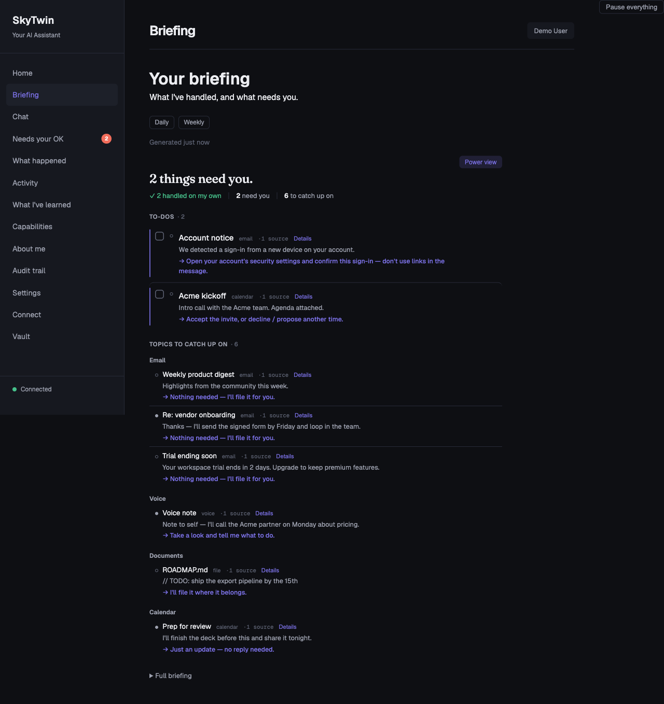
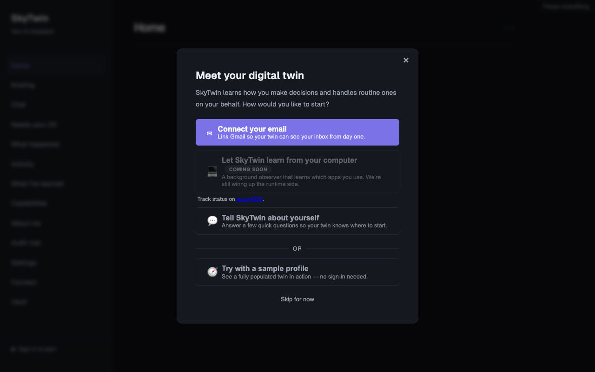
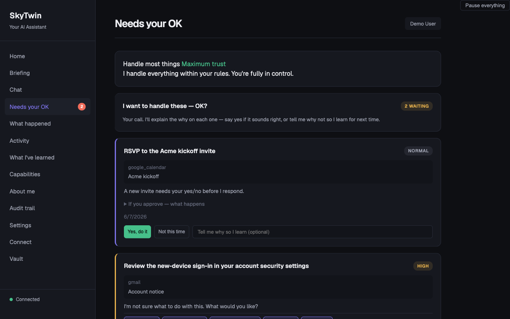
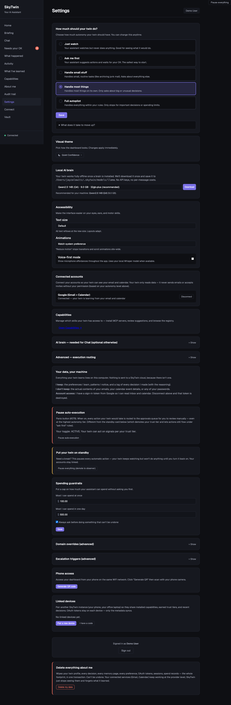

Open source · local-first · Apache 2.0
A digital twin that learns what you'd want — and does it.
SkyTwin reads your inbox and calendar, builds a structured model of your preferences, and acts on your behalf. It splits what needs you from what's just awareness, explains every decision, and never does anything risky without asking. Local-first by default — cloud AI is opt-in.

It acts. It doesn't chat.
SkyTwin isn't a chatbot waiting for a prompt. It watches your connected accounts and acts when there's something worth doing — within limits you set, with a record you can audit.
Act vs. catch-up, cited
The Inbox-Intelligence digest splits the few things that need a decision from the topics you just want awareness of — grouped by matter, de-duplicated across signals, each line citing the email/event it came from.
Every action is explained
Each automated decision produces a record: what happened, what evidence was used, which of your preferences applied, why this over the alternatives, and how to correct it.
Trust you grant, not assume
New twins start in observe-only mode and earn autonomy through your feedback. Spend limits are hard caps. Untrusted-origin content can never auto-run destructive work. One switch pauses everything.
Local by default
CockroachDB and an optional local LLM are embedded in the desktop app, and your data stays in a database on your own machine. We don't run a server your data flows through. Cloud AI is opt-in — and when you choose it, the decision pipeline redacts email addresses from its prompts first. Turn on full-disk encryption (FileVault / BitLocker / LUKS); see the privacy policy for exactly what is and isn't encrypted at rest today.
See it before you connect anything
The demo path uses a seeded sample profile, so a stranger sees real decisions, real explanations, and real controls without touching a private inbox. Walk the five-minute storyboard →



Google account access — what we use and why
SkyTwin requests the minimum Google API scopes needed to be useful as a personal assistant. Each scope ties to a specific feature. The OAuth flow lands on http://127.0.0.1 — your token is delivered straight to the desktop process and stored in your local database. It never traverses any server we control. The bundled SkyTwin OAuth client requests identity and Calendar only. The Gmail scopes below require you to bring your own Google OAuth client; see Connect Gmail.
| Scope | What it enables |
|---|---|
gmail.readonlybring-your-own client | Read inbox to classify incoming mail, learn which threads you act on vs. ignore, and surface the few that need your attention. Without this, SkyTwin can't observe email at all. |
gmail.modifybring-your-own client | Apply labels, archive newsletters you've taught SkyTwin to archive, and send Gmail replies or new messages after approval or under autonomy rules you explicitly enable. SkyTwin-sent emails include a default-on repo footer that can be turned off in Settings. SkyTwin does not permanently delete mail. |
calendar.readonlybundled client | Read your calendar to spot conflicts, find time, and learn your scheduling preferences. |
calendar.eventsbundled client | Create, modify, and decline calendar invites with your approval (or auto-handle events matching patterns you've taught SkyTwin). |
openid, email, profilebundled client | Confirm your Google identity so the right account maps to the right twin profile in your local database. |
User.Read, Mail.Read, Calendars.Read, offline_accessMicrosoft Graph · bring-your-own client | Read-only Outlook mail and calendar, plus the signed-in account's address. SkyTwin requests no Outlook write scopes, so it cannot send Outlook mail or change Outlook events. |
Full detail in the privacy policy. Bringing your own OAuth credentials takes about five minutes — see Connect Gmail.
Open source & transparent
Apache 2.0. Every line of the agent that reads your mail, the OAuth flow, and the policy engine that decides what auto-runs vs. asks first is on GitHub. The CHANGELOG records every behavior change; the architecture docs explain how decisions get made.
- Safety model — threat model, trust tiers, defense layers
- Technical spec — architecture, data flow, schema
- Product spec — what we will and won't ship, and why
- Demo storyboard — and the operator script behind it
- Privacy policy · Terms of service
Install
Grab the desktop installer (.dmg / .exe / .AppImage / .deb / .rpm) from the latest release. The app keeps itself current — it checks for updates in the background and offers a one-click restart when one's ready. Or build from source in one command on macOS / Linux / WSL:
curl -fsSL https://raw.githubusercontent.com/jayzalowitz/skytwin/main/install.sh | bashBeta builds aren't code-signed yet, so macOS Gatekeeper / Windows SmartScreen will warn on first launch — right-click → Open (macOS) or More info → Run anyway (Windows). Signing is in progress.
How this stays alive
Free and open source forever for personal use. Future Team and Hosted tiers are planned for organizations that need shared policies, audit logs, or managed infrastructure — personal features will never be paywalled. No prices today: overpromising on a backlog we haven't shipped is the easiest trust to lose. Want one of the upcoming tiers? Open an issue describing what your org needs and help shape what ships.